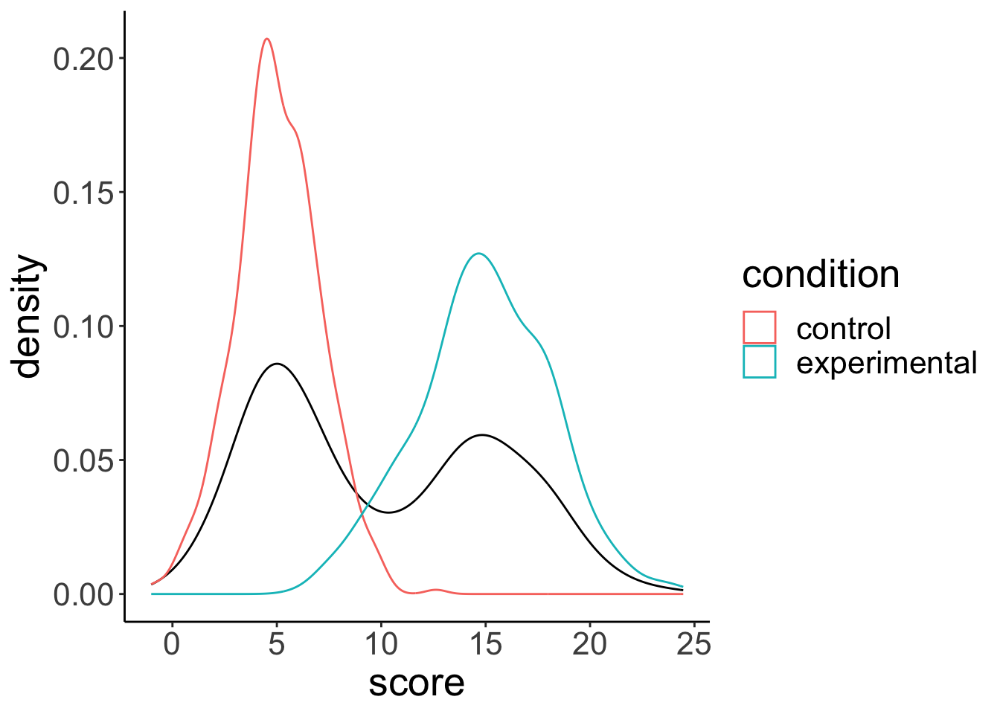
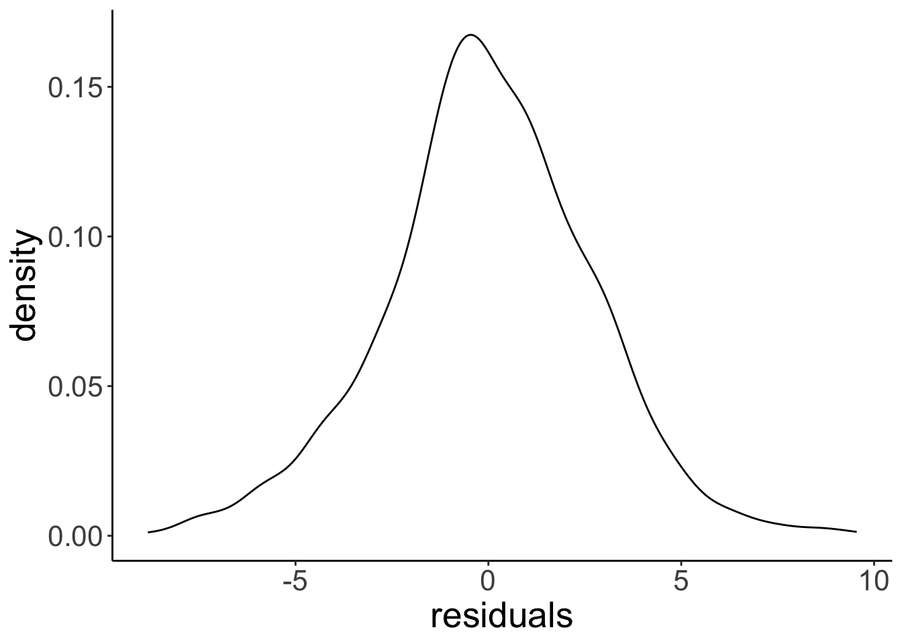
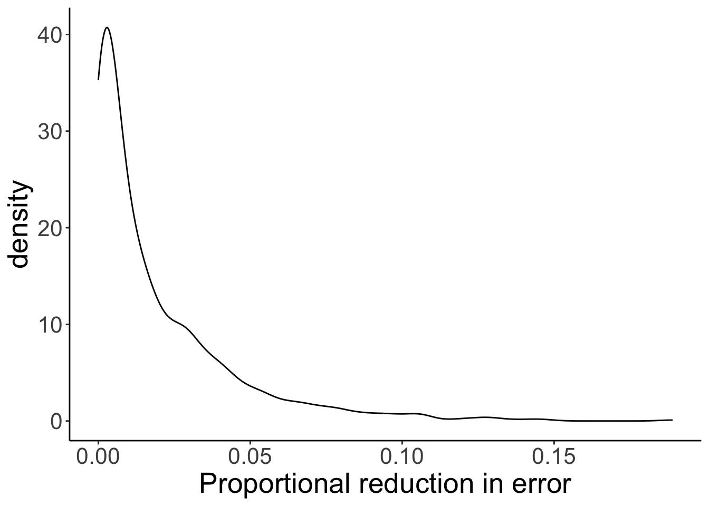
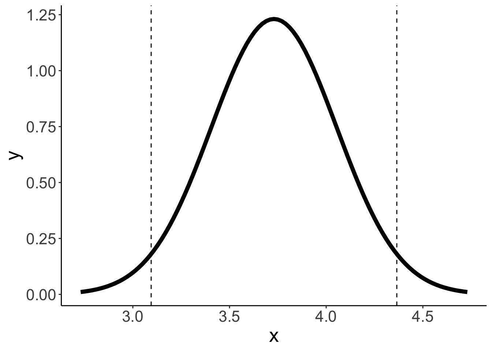
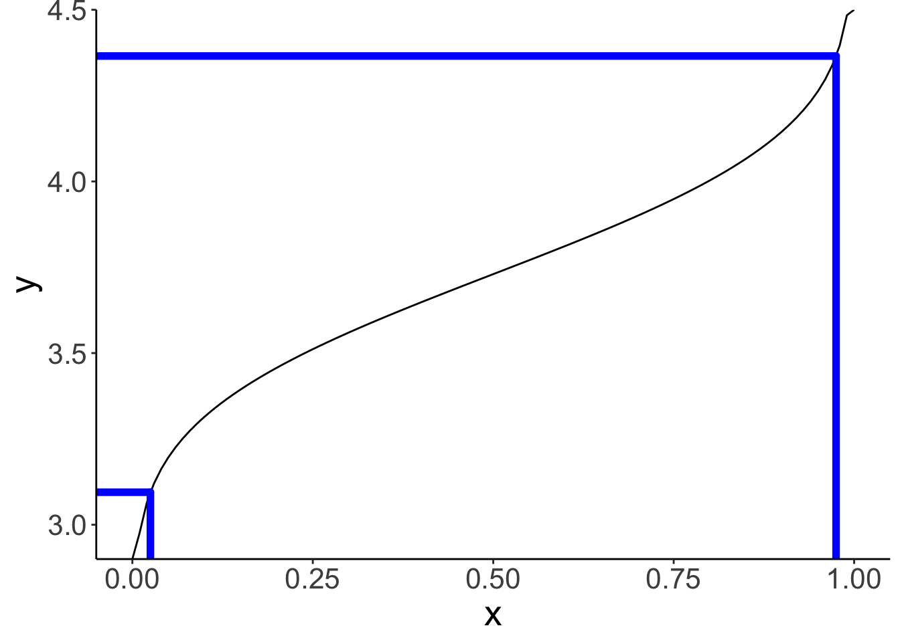

Chapter 3 Modeling data
3.1 Load packages and set plotting theme
library("knitr") # for knitting RMarkdown
library("kableExtra") # for making nice tables
library("janitor") # for cleaning column names
library("tidyverse") # for wrangling, plotting, etc. ## Warning: package 'ggplot2' was built under R version 4.3.1## Warning: package 'dplyr' was built under R version 4.3.13.2 Modeling data
3.2.1 Simplicity vs. accuracy trade-off
# make example reproducible
set.seed(1)
n_samples = 20 # sample size
n_parameters = 2 # number of parameters in the polynomial regression
# generate data
df.data = tibble(x = runif(n_samples, min = 0, max = 10),
y = 10 + 3 * x + 3 * x^2 + rnorm(n_samples, sd = 20))
# plot a fit to the data
ggplot(data = df.data,
mapping = aes(x = x,
y = y)) +
geom_point(size = 3) +
# geom_hline(yintercept = mean(df.data$y), color = "blue") +
geom_smooth(method = "lm", se = F,
formula = y ~ poly(x, degree = n_parameters, raw = TRUE)) +
theme(axis.ticks = element_blank(),
axis.title = element_blank(),
axis.text = element_blank())Figure 3.1: Tradeoff between fit and model simplicity.
# make example reproducible
set.seed(1)
# n_samples = 20
n_samples = 3
df.pre = tibble(x = runif(n_samples, min = 0, max = 10),
y = 2 * x + rnorm(n_samples, sd = 1))
# plot a fit to the data
ggplot(data = df.pre,
mapping = aes(x = x,
y = y)) +
geom_point(size = 3) +
# geom_hline(yintercept = mean(df.pre$y), color = "blue") +
geom_smooth(method = "lm", se = F,
formula = y ~ poly(x, 1, raw = TRUE)) +
theme(axis.ticks = element_blank(),
axis.title = element_blank(),
axis.text = element_blank())Figure 1.1: Figure that I used to illustrate that fitting more data points with fewer parameter is more impressive.
3.2.2 Sampling distributions for median and mean
# make example reproducible
set.seed(1)
sample_size = 40 # size of each sample
sample_n = 1000 # number of samples
# draw sample
fun.draw_sample = function(sample_size, distribution){
x = 50 + rnorm(sample_size)
return(x)
}
# generate many samples
samples = replicate(n = sample_n,
fun.draw_sample(sample_size, df.population))
# set up a data frame with samples
df.sampling_distribution = matrix(samples, ncol = sample_n) %>%
as_tibble(.name_repair = ~ str_c(1:sample_n)) %>%
pivot_longer(cols = everything(),
names_to = "sample",
values_to = "number") %>%
mutate(sample = as.numeric(sample)) %>%
group_by(sample) %>%
mutate(draw = 1:n()) %>%
select(sample, draw, number) %>%
ungroup()
# turn the data frame into long format and calculate the mean and median of each sample
df.sampling_distribution_summaries = df.sampling_distribution %>%
group_by(sample) %>%
summarize(mean = mean(number),
median = median(number)) %>%
ungroup() %>%
pivot_longer(cols = -sample,
names_to = "index",
values_to = "value")And plot it:
# plot a histogram of the means with density overlaid
ggplot(data = df.sampling_distribution_summaries,
mapping = aes(x = value, color = index)) +
stat_density(bw = 0.1,
size = 2,
geom = "line") +
scale_y_continuous(expand = expansion(mult = c(0, 0.01)))Warning: Using `size` aesthetic for lines was deprecated in ggplot2 3.4.0.
ℹ Please use `linewidth` instead.
This warning is displayed once every 8 hours.
Call `lifecycle::last_lifecycle_warnings()` to see where this warning was generated.
3.2.3 Residuals need to be normally distributed, not the data itself
set.seed(1)
n_participants = 1000
df.normal = tibble(participant = 1:n_participants,
condition = rep(c("control", "experimental"), each = n_participants/2)) %>%
mutate(score = ifelse(condition == "control",
rnorm(n = n_participants, mean = 5, sd = 2),
rnorm(n = n_participants, mean = 15, sd = 3)))
# distribution of the data
ggplot(data = df.normal,
mapping = aes(x = score)) +
geom_density() +
geom_density(mapping = aes(group = condition,
color = condition))
# distribution of the residuals after having fitted a linear model
# we'll learn how to do this later
fit = lm(formula = score ~ 1 + condition,
data = df.normal)
ggplot(data = tibble(residuals = fit$residuals),
mapping = aes(x = residuals)) +
geom_density()
3.3 Hypothesis testing: “One-sample t-test”
── Column specification ────────────────────────────────────────────────────────────────────────────────────────────────────────────────────────────────────────────────────────────────────────────────────
cols(
State = col_character(),
Internet = col_double(),
College = col_double(),
Auto = col_double(),
Density = col_double()
)df.internet %>%
mutate(i = 1:n()) %>%
select(i, internet, everything()) %>%
head(10) %>%
kable(digits = 1) %>%
kable_styling(bootstrap_options = "striped",
full_width = F)| i | internet | state | college | auto | density |
|---|---|---|---|---|---|
| 1 | 79.0 | AK | 28.0 | 1.2 | 1.2 |
| 2 | 63.5 | AL | 23.5 | 1.3 | 94.4 |
| 3 | 60.9 | AR | 20.6 | 1.7 | 56.0 |
| 4 | 73.9 | AZ | 27.4 | 1.3 | 56.3 |
| 5 | 77.9 | CA | 31.0 | 0.8 | 239.1 |
| 6 | 79.4 | CO | 37.8 | 1.0 | 48.5 |
| 7 | 77.5 | CT | 37.2 | 1.0 | 738.1 |
| 8 | 74.5 | DE | 29.8 | 1.1 | 460.8 |
| 9 | 74.3 | FL | 27.2 | 1.2 | 350.6 |
| 10 | 72.2 | GA | 28.3 | 1.1 | 168.4 |
# parameters per model
pa = 1
pc = 0
df.model = df.internet %>%
select(internet, state) %>%
mutate(i = 1:n(),
compact_b = 75,
augmented_b = mean(internet),
compact_se = (internet-compact_b)^2,
augmented_se = (internet-augmented_b)^2) %>%
select(i, state, internet, contains("compact"), contains("augmented"))
df.model %>%
summarize(augmented_sse = sum(augmented_se),
compact_sse = sum(compact_se),
pre = 1 - augmented_sse/compact_sse,
f = (pre/(pa-pc))/((1-pre)/(nrow(df.model)-pa)),
p_value = 1-pf(f, pa-pc, nrow(df.model)-1),
mean = mean(internet),
sd = sd(internet)) %>%
kable() %>%
kable_styling(bootstrap_options = "striped",
full_width = F)| augmented_sse | compact_sse | pre | f | p_value | mean | sd |
|---|---|---|---|---|---|---|
| 1355.028 | 1595.71 | 0.1508305 | 8.703441 | 0.0048592 | 72.806 | 5.258673 |
df1 = 1
df2 = 49
ggplot(data = tibble(x = c(0, 10)),
mapping = aes(x = x)) +
stat_function(fun = "df",
geom = "area",
fill = "red",
alpha = 0.5,
args = list(df1 = df1,
df2 = df2),
size = 1,
xlim = c(qf(0.95, df1 = df1, df2 = df2), 10)) +
stat_function(fun = ~ df(x = .,
df1 = df1,
df2 = df2),
size = 0.5) +
scale_y_continuous(expand = expansion(add = c(0.001, 0.1))) +
labs(y = "Density",
x = "Proportional reduction in error")Warning: Computation failed in `stat_function()`
Caused by error in `fun()`:
! could not find function "fun"Figure 3.2: F-distribution
We’ve implemented a one sample t-test (compare the p-value here to the one I computed above using PRE and the F statistic).
One Sample t-test
data: df.internet$internet
t = -2.9502, df = 49, p-value = 0.004859
alternative hypothesis: true mean is not equal to 75
95 percent confidence interval:
71.3115 74.3005
sample estimates:
mean of x
72.806 3.4 Building a sampling distribution of PRE
Here is the general procedure for building a sampling distribution of the proportional reduction in error (PRE). In this instance, I compare the following two models
- Model C (compact): \(Y_i = 75 + \epsilon_i\)
- Model A (augmented): \(Y_i = \overline Y + \epsilon_i\)
whereby I assume that \(\epsilon_i \sim \mathcal{N}(0, \sigma)\).
For this example, I assume that I know the population distribution. I first draw a sample from that distribution, and then calculate PRE.
# make example reproducible
set.seed(1)
# set the sample size
sample_size = 50
# draw sample from the population distribution (I've fixed sigma -- the standard deviation
# of the population distribution to be 5)
df.sample = tibble(observation = 1:sample_size,
value = 75 + rnorm(sample_size, mean = 0, sd = 5))
# calculate SSE for each model, and then PRE based on that
df.summary = df.sample %>%
mutate(compact = 75,
augmented = mean(value)) %>%
summarize(sse_compact = sum((value - compact)^2),
sse_augmented = sum((value - augmented)^2),
pre = 1 - (sse_augmented/sse_compact))To generate the sampling distribution, I assume that the null hypothesis is true, and then take a look at what values for PRE we could expect by chance for our given sample size.
# simulation parameters
n_samples = 1000
sample_size = 50
mu = 75 # true mean of the distribution
sigma = 5 # true standard deviation of the errors
# function to draw samples from the population distribution
fun.draw_sample = function(sample_size, mu, sigma){
sample = mu + rnorm(sample_size,
mean = 0,
sd = sigma)
return(sample)
}
# draw samples
samples = n_samples %>%
replicate(fun.draw_sample(sample_size, mu, sigma)) %>%
t() # transpose the resulting matrix (i.e. flip rows and columns)
# put samples in data frame and compute PRE
df.samples = samples %>%
as_tibble(.name_repair = ~ str_c(1:ncol(samples))) %>%
mutate(sample = 1:n()) %>%
pivot_longer(cols = -sample,
names_to = "index",
values_to = "value") %>%
mutate(compact = mu) %>%
group_by(sample) %>%
mutate(augmented = mean(value)) %>%
summarize(sse_compact = sum((value - compact)^2),
sse_augmented = sum((value - augmented)^2),
pre = 1 - sse_augmented/sse_compact)
# plot the sampling distribution for PRE
ggplot(data = df.samples,
mapping = aes(x = pre)) +
stat_density(geom = "line") +
labs(x = "Proportional reduction in error")
# calculate the p-value for our sample
df.samples %>%
summarize(p_value = sum(pre >= df.summary$pre)/n())# A tibble: 1 × 1
p_value
<dbl>
1 0.394
Some code I wrote to show a subset of the samples.
samples %>%
as_tibble(.name_repair = "unique") %>%
mutate(sample = 1:n()) %>%
pivot_longer(cols = -sample,
names_to = "index",
values_to = "value") %>%
mutate(compact = mu) %>%
group_by(sample) %>%
mutate(augmented = mean(value)) %>%
ungroup() %>%
mutate(index = str_extract(index, pattern = "\\-*\\d+\\.*\\d*"),
index = as.numeric(index)) %>%
filter(index < 6) %>%
arrange(sample, index) %>%
head(15) %>%
kable(digits = 2) %>%
kable_styling(bootstrap_options = "striped",
full_width = F)| sample | index | value | compact | augmented |
|---|---|---|---|---|
| 1 | 1 | 76.99 | 75 | 75.59 |
| 1 | 2 | 71.94 | 75 | 75.59 |
| 1 | 3 | 76.71 | 75 | 75.59 |
| 1 | 4 | 69.35 | 75 | 75.59 |
| 1 | 5 | 82.17 | 75 | 75.59 |
| 2 | 1 | 71.90 | 75 | 74.24 |
| 2 | 2 | 75.21 | 75 | 74.24 |
| 2 | 3 | 70.45 | 75 | 74.24 |
| 2 | 4 | 75.79 | 75 | 74.24 |
| 2 | 5 | 71.73 | 75 | 74.24 |
| 3 | 1 | 77.25 | 75 | 75.38 |
| 3 | 2 | 74.91 | 75 | 75.38 |
| 3 | 3 | 73.41 | 75 | 75.38 |
| 3 | 4 | 70.35 | 75 | 75.38 |
| 3 | 5 | 67.56 | 75 | 75.38 |
3.5 Misc
Some code to plot probability distributions together with values of interest highlighted.
value_mean = 3.73
value_sd = 2.05/sqrt(40)
q_low = qnorm(0.025, mean = value_mean, sd = value_sd)
q_high = qnorm(0.975, mean = value_mean, sd = value_sd)
qnorm(0.975) * value_sd[1] 0.6352899# density function
ggplot(data = tibble(x = c(2.73, 4.73)),
mapping = aes(x = x)) +
stat_function(fun = ~ dnorm(.,
mean = value_mean,
sd = value_sd),
size = 2) +
geom_vline(xintercept = c(q_low, q_high),
linetype = 2)
# quantile function
df.paths = tibble(x = c(rep(c(0.025, 0.975), each = 2),
-Inf, 0.025, -Inf, 0.975),
y = c(2.9, q_low,
2.9, q_high,
q_low, q_low,
q_high, q_high),
group = rep(1:4, each = 2))
ggplot(data = tibble(x = c(0, 1)),
mapping = aes(x = x)) +
stat_function(fun = ~ qnorm(.,
mean = value_mean,
sd = value_sd)) +
geom_path(data = df.paths,
mapping = aes(x = x,
y = y,
group = group),
color = "blue",
size = 2,
lineend = "round") +
coord_cartesian(xlim = c(-0.05, 1.05),
ylim = c(2.9, 4.5),
expand = F)
3.6 Additional resources
3.6.1 Reading
- Judd, C. M., McClelland, G. H., & Ryan, C. S. (2011). Data analysis: A model comparison approach. Routledge. –> Chapters 1–4
3.7 Session info
Information about this R session including which version of R was used, and what packages were loaded.
R version 4.3.0 (2023-04-21)
Platform: aarch64-apple-darwin20 (64-bit)
Running under: macOS 14.1.1
Matrix products: default
BLAS: /Library/Frameworks/R.framework/Versions/4.3-arm64/Resources/lib/libRblas.0.dylib
LAPACK: /Library/Frameworks/R.framework/Versions/4.3-arm64/Resources/lib/libRlapack.dylib; LAPACK version 3.11.0
locale:
[1] en_US.UTF-8/en_US.UTF-8/en_US.UTF-8/C/en_US.UTF-8/en_US.UTF-8
time zone: America/Chicago
tzcode source: internal
attached base packages:
[1] stats graphics grDevices utils datasets methods base
other attached packages:
[1] lubridate_1.9.2 forcats_1.0.0 stringr_1.5.0 dplyr_1.1.4
[5] purrr_1.0.2 readr_2.1.4 tidyr_1.3.0 tibble_3.2.1
[9] ggplot2_3.4.4 tidyverse_2.0.0 janitor_2.2.0 kableExtra_1.3.4
[13] knitr_1.42
loaded via a namespace (and not attached):
[1] sass_0.4.6 utf8_1.2.3 generics_0.1.3 xml2_1.3.4
[5] lattice_0.21-8 stringi_1.7.12 hms_1.1.3 digest_0.6.31
[9] magrittr_2.0.3 evaluate_0.21 grid_4.3.0 timechange_0.2.0
[13] bookdown_0.34 fastmap_1.1.1 Matrix_1.6-4 jsonlite_1.8.4
[17] mgcv_1.8-42 httr_1.4.6 rvest_1.0.3 fansi_1.0.4
[21] viridisLite_0.4.2 scales_1.3.0 jquerylib_0.1.4 cli_3.6.1
[25] crayon_1.5.2 rlang_1.1.1 splines_4.3.0 munsell_0.5.0
[29] withr_2.5.0 cachem_1.0.8 yaml_2.3.7 tools_4.3.0
[33] tzdb_0.4.0 colorspace_2.1-0 webshot_0.5.4 vctrs_0.6.5
[37] R6_2.5.1 lifecycle_1.0.3 snakecase_0.11.0 pkgconfig_2.0.3
[41] bslib_0.4.2 pillar_1.9.0 gtable_0.3.3 glue_1.6.2
[45] systemfonts_1.0.4 highr_0.10 xfun_0.39 tidyselect_1.2.0
[49] rstudioapi_0.14 farver_2.1.1 nlme_3.1-162 htmltools_0.5.5
[53] labeling_0.4.2 rmarkdown_2.21 svglite_2.1.1 compiler_4.3.0